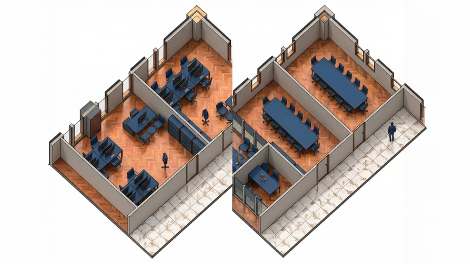


Belirsiz Gelecek İçin Dirençli Modül Tasarımı
Fikir
Bir ofis binası 75 yıl ayakta kalır, ama içi her 5 yılda değişir. 12/84 sistemi, bu belirsizliği sorun değil tasarım girdisi olarak kabul eder: tek modüler mantık, sınırsız konfigürasyon.
Devamını Oku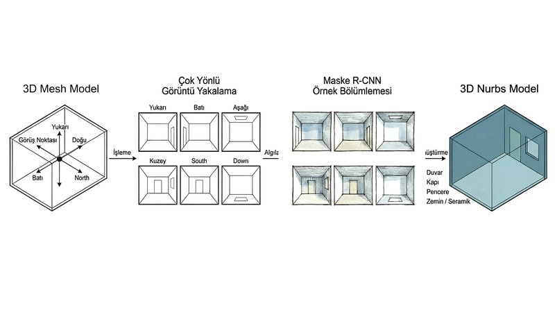


GeoVisionAI
Yapay Zekâ
İç mekân taramasından yapı elemanlarını elle modellemek saatler alır. GeoVisionAI, bunu derin öğrenme ile otomatikleştiriyor. Özyeğin Üniversitesi, TÜBİTAK 3501 araştırma projesi.
Araştırmayı İncele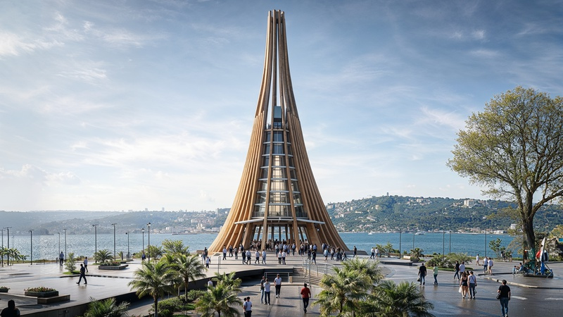


Seyir Kulesi
Mimari
Her seviye İstanbul panoramasına farklı bir perspektif açarken, tabandaki kamusal meydan kenti yapıyla buluşturuyor.
Projeyi İncele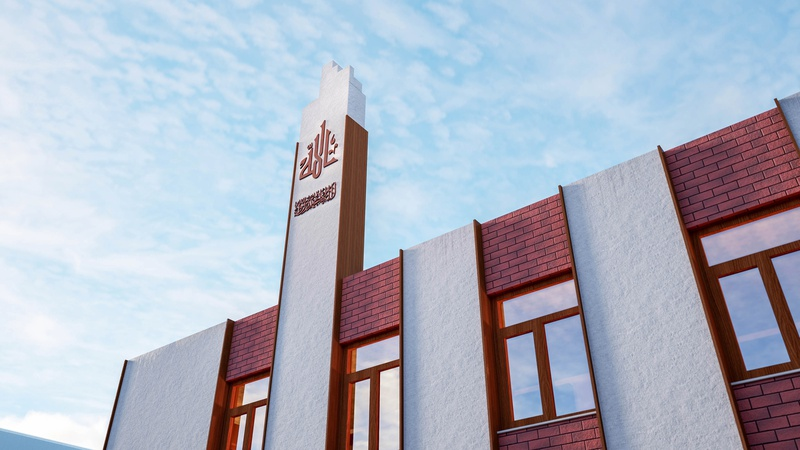


Herat Camii
Mimari
Afganistan'da geleneksel cami ruhunu çağdaş bir kütle diliyle yeniden kuran mahalle mescidi.
Projeyi İncele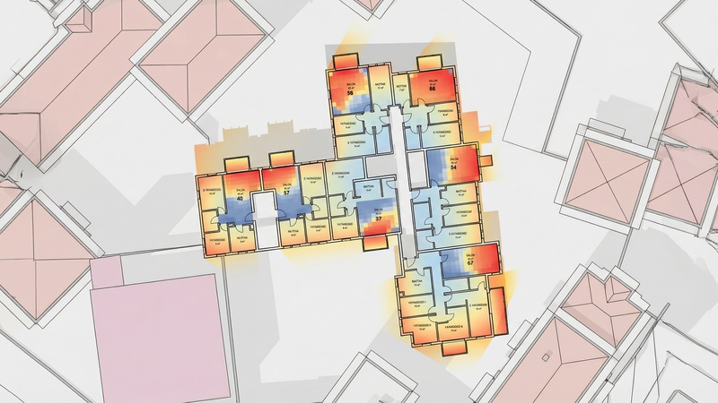


Toplu Konutta Gün Işığı Optimizasyonu
Optimizasyon
Aynı pencereler, aynı plan; yalnızca farklı yönelim. Galapagos evrimsel algoritması ile yıllık 250 saat yapay aydınlatma tasarrufu elde edildi.
Analizi İncele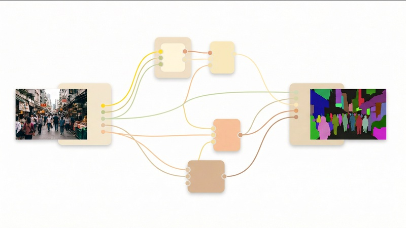


Grasshopper'da MaskRCNN
Yapay Zekâ
Veri seti hazırlığından model eğitimine, tespitden yayın kalitesinde karşılaştırmaya kadar tüm Mask R-CNN iş akışını Grasshopper ortamına taşıyan eklenti.
Eklentiyi İncele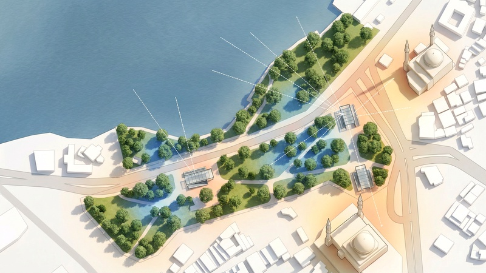


Üsküdar Meydanı: Dış Mekânda Konfor
Optimizasyon
İstanbul'un en yoğun yaya kesişim noktalarından birinde rüzgâr, güneş ve görüş analizleriyle yönlendirilen parametrik bir termal konfor optimizasyonu çalışması.
Analizi İncele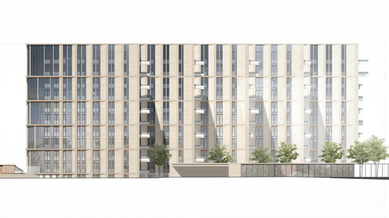


Victory Park Konut Kompleksi
Fabrikasyon
Geleneksel yöntemle aylar sürecek 7.436 adet taş cephe imalat çizimi, Grasshopper parametrik algoritmasıyla üretildi.
Süreci Keşfet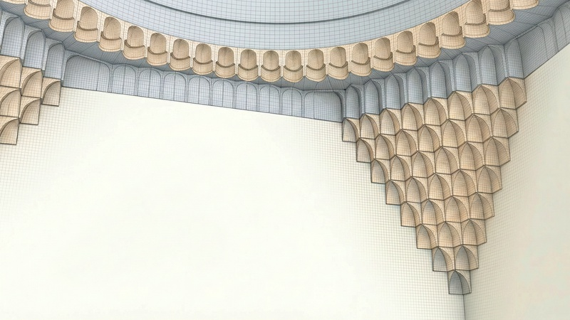


Mukarnasın Performansı: Günışığı ve Akustik
Optimizasyon
Geleneksel mukarnas geometrisinin bağlamsal performansı simüle edildi ve genetik algoritmalarla optimize edildi . 2 uluslararası makale yayınlandı.
Süreci Keşfet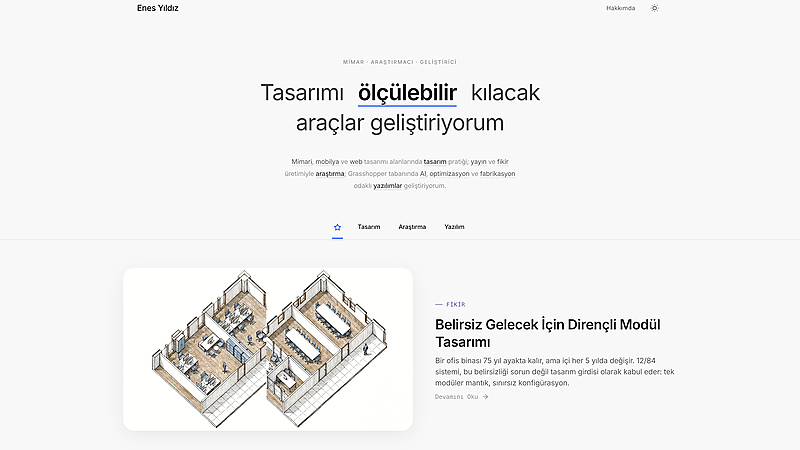

mimarenes.com
Kişisel Portfolyo Sitesi
Tasarım, araştırma ve yazılım projelerini bir araya getiren kişisel portfolyo. Statik HTML/CSS/JS ile inşa edildi.
Web Sitesini Ziyaret Et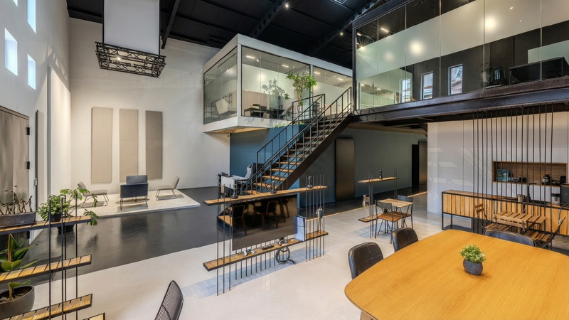


Stüdyo Balat
Mimari
Siyah çelik, doğal meşe ve cam. Üç malzemenin farklı ölçeklerde tekrarıyla şekillenen endüstriyel dönüşüm. Balat'taki hangar yapısı, prodüksiyon şirketinin yaratıcı enerjisini taşıyan bir merkez ofise evrildi.
Projeyi İncele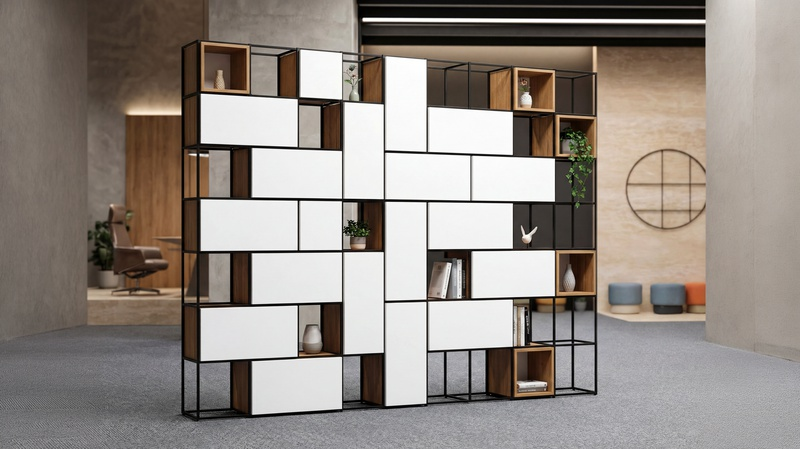


Frame Shelf
Mobilya
Metal grid ve ahşap kutuların rastgele görünen kurallı dizilimi.
Görselleri Gör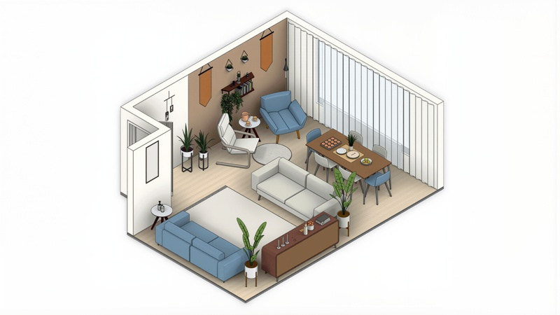


Minimalev: İç Mimarlığı Dijitalleştirmek
Fikir
Yüz yüze görüşme, uzun süreç ve yüksek maliyete dayalı iç mimarlık hizmetini tamamen online bir platforma taşıyan girişim. BIM tabanlı 3D tasarım, e-ticaret altyapısı ve kişiselleştirilmiş sunum sayfalarıyla uçtan uca kurgulandı.
Detayları İnceleInvestigating the Impact of Muqarnas on the Daylighting Performance of Historical Turkish Baths
METU JFA · 2024
Asli Agirbas, Enes Yildiz, 2024. METU JFA, 41(2), 91-106.
DOI: 10.4305/METU.JFA.2024.2.4 · Index: AHCI
The Effect of Muqarnas on Acoustic Quality of Traditional Turkish Bath Interior Space
ACM Journal on Computing and Cultural Heritage · 2023
Asli Agirbas, Enes Yildiz, 2023. ACM Journal on Computing and Cultural Heritage, 16(3), 1-20.
DOI: 10.1145/3589248 · Index: SCI-Expanded
Detecting Building Components with Artificial Intelligence for Integration into Building Physics Simulations
XIVth International Sinan Symposium · 2025
Enes Yildiz, Asli Agirbas, 2025. XIVth International Sinan Symposium, Trakya University, Edirne, Turkey, 17-18 April, pp. 413-420.
Bildiriyi OkuA Framework for Creating a Deep Learning Training Dataset Based on Building Components
From Tradition to Future Conference'24 · 2024
Enes Yildiz, Asli Agirbas, 2024. From Tradition to Future Conference'24, Fatih Sultan Mehmet Vakif University, Istanbul, Turkey, 13-14 November, pp. 166-170.
Bildiriyi Oku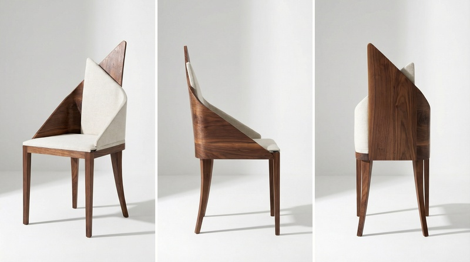


Arc Chair
Mobilya
Minimal çizgiler ve organik eğrilerle şekillenen sandalye tasarımı.
Görselleri Gör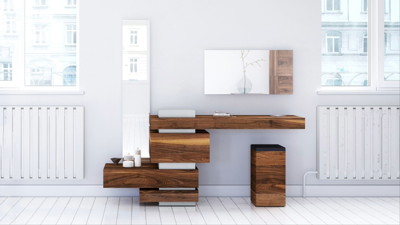


Plane Collection
Mobilya
Birbirine geçen düzlemlerle kurgulanan heykelsi bir mobilya koleksiyonu.
Görselleri Gör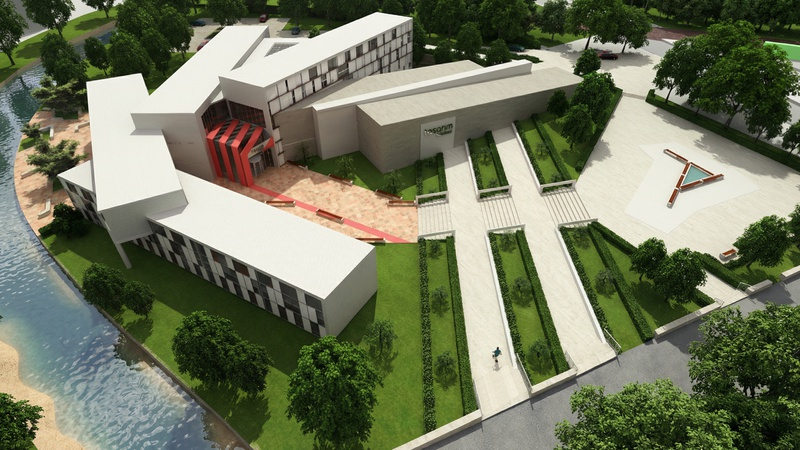


Tasarım Fakültesi
Mimari
Kentten ödünç alınan tek bir ölçü, bir mekansal deneyim üretti. 8 metrelik modüller, merkezi avlu etrafında farklı açılarla konumlanarak mekansal çeşitlilik sunuyor.
Projeyi İncele
minimalev.com
Online İç Mimarlık Platformu
İç mimarlık hizmetini dijital bir platforma taşıyan girişim. WordPress + WooCommerce altyapısıyla sipariş, randevu ve 3D tasarım teslimi tek çatı altında.
Web Sitesini Ziyaret Et